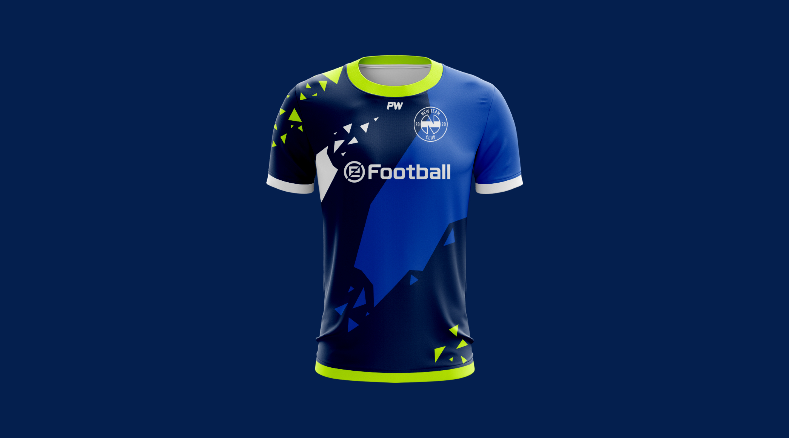
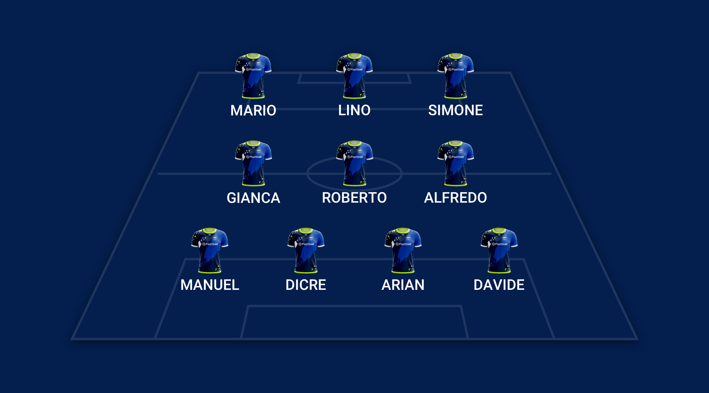
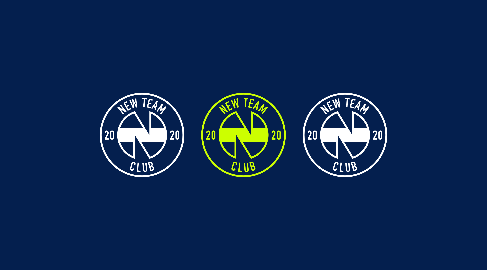
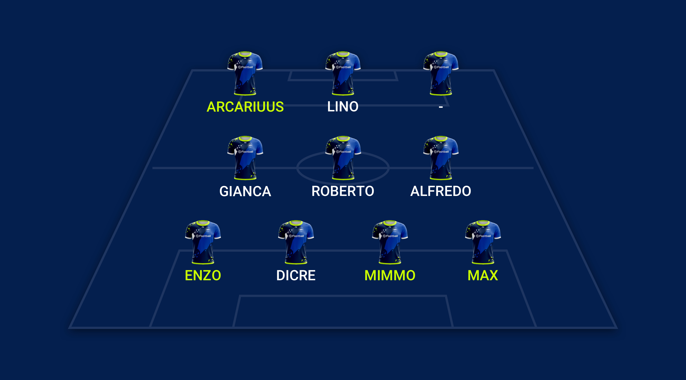

NOI SIAMO LA NEW TEAM
La storia della New Team 2.0 comincia nell'Aprile del 2020. A seguito di una scissione, ho voluto provare a gestire e far crescere questo gruppo. Sin dal principio, ho sempre pensato che avrei fatto fatica a scrollarmi il passato di dosso rendendo questo gruppo finalmente libero.
Quello che cerco di fare si diversifica dalle altre squadre per metodo e idee. Il mio obiettivo è quello di crere un brand competitivo, riconosciuto, che rifletta i valori del club e del mondo 10vs10.

Nella rosa attuale abbiamo ottimi elementi ma anche diversi giocatori che credono di avere il talento necessario per fare la differenza. I profili che fanno ancora parte della vecchia squadra, sono difficili da gestire e sono sempre pronti a distruggere tutto.
DIFESA
ARIAN, DI CRE, DAVIDE, MIKE, DANIELE, MANUEL
CENTROCAMPO
GIANCARLO, ALFREDO, ROBERTO, LUCA
ATTACCO
LINO, SIMONE, MARIO, STEFANO, LACO, NIK
É arrivato il momento di cambiare.
Il prossimo anno puntiamo su un cambiamento drastico, l'idea è quella di avere un brand multiplo che raccoglie due o più squadre che collaborano e competono tra di loro.
Ogni squadra verrà gestita separatamente da due capitani che avranno aiuto e supporto dal club. Il brand cosi avrà piu visibilita e possibilita di crescere.

Abbiamo bisogno di voi.
Per cambiare definitivamente abbiamo bisogno di voi, della vostra qualità ed esperienza. Non possiamo ignorare quanto di buono abbiamo fatto lo scorso anno.
La nostra idea è quella di creare due squadre da 14 giocatori ciascuna ed assicurare a tutti continuità e massimo impegno da parte di tutti in massimo 2 competizioni.
Oltre a voi come blocco difensivo, vogliamo anche aggiungere un paio di PRO player al fine di aumentare la nostra visibilità e migliorare al massimo la parte offensiva. Uno dei nomi che stiamo cercando di conquistare: Arcariuus. Giovane PRO Player dalla prospettiva interessante con passato nei Palermo ESPORTS e attualmente nei PES Foxes.

Questa la top 10 a cui stiamo lavorando. Iniziando da voi, le persone che conosciamo meglio. Ovviamente avremmo bisogno di ragazzi disposti ad aiutarci in caso di bisogno e quindi avere altre 4 riserve pronte a subentrare.
Abbiamo 2 proposte di sponsor a cui sto lavorando per la prossima stagione.
Vi chiedo di considerare i nostri limiti ma anche le nostre idee e la voglia di rendere questo brand competitivo. Vi chiedo di pensare a noi, sinceramente.
Grazie, Stefano.
Possiamo fare grandi cose insieme.